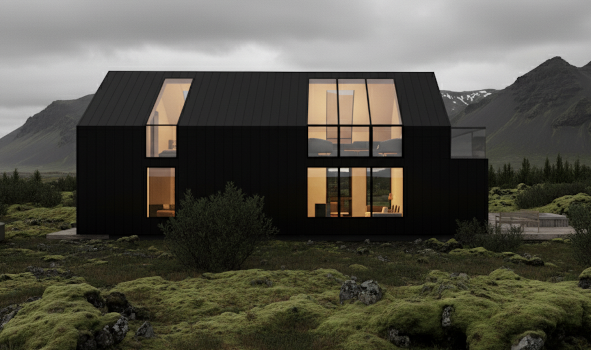

Sumarhús við Geysi
Sumarhús hannað utan um norðurljósin og útsýnið yfir Haukadal — svart timburhús sem hvílir lágt í mosavöxnu hrauni.
Húsið er hugsað sem sjónauki að himni og fjallahring. Brotið mænisform opnar stór gluggafleti til norðurs og upp í rjáfur, þannig að norðurljósin verða hluti af stofunni á veturna og miðnætursólin á sumrin. Svört standandi klæðning lætur húsið hverfa inn í dökkt hraunið á meðan hlý birta innan úr því lýsir eins og lugt í landslaginu.
Innra skipulagið er einfalt og hagkvæmt: samfellt alrými fyrir eldhús, borðstofu og stofu undir fullri lofthæð, svefnrými á tveimur pöllum og baðstofa sem tengist heitum potti á sólpalli. Efnisvalið er fábrotið — náttúrulegur viður, steinn og ull — valið til að eldast fallega með húsinu.
Verkefnið er unnið alla leið frá fyrstu skissu að byggingarleyfi og eftirliti á framkvæmdatíma.

